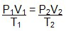
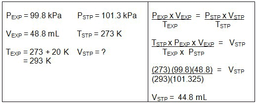
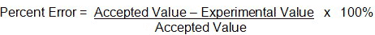
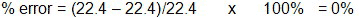

Unit 5: Gases and Atmospheric Chemistry
Activity 3: Gas Everywhere
Content
Molar Volume and the Combined Gas Laws
The molar volume of any gas at STP conditions is 22.4 L/mol. In these conditions, one mole of any gas will occupy a space of 22.4 L. Finding out a volume, pressure or temperature of one mole of gas in conditions other than STP, you would use the combined gas law:


|
StopBefore you go any further, make sure that you have a calculator and pay close attention to the next example and take good notes. This example should act as a model for the first assignment. |
|---|
 Example
Example
In a delicate experiment where a tiny amount of oxygen gas is being produced, a 0.064 g sample of the gas is expected to be a product of a reaction. The volume of oxygen gas collected over water at a temperature of 20 °C was 44.8 mL. The barometric pressure in the room was 102.1 kPa. Calculate the molar volume of the oxygen gas.
 Sample Solution
Sample Solution
- Moles of oxygen being produced = m/M
n = 0.064 g/32 g/mol = 0.002 mol
- Pressure of oxygen gas = Ptotal - Pwater
The vapour pressure of water at 20°C is 2.3 kPa.
P (oxygen) = 102.1 kPa – 2.3 kPa = 99.8 kPa
- Using the experimental values for pressure, volume and temperature, calculate the equivalent volume of hydrogen gas at STP conditions.

-
Molar volume = ?
Molar volume = V/n (at STP)
Molar volume = 0.0448 L/ 0.002 mol = 22.4 L/mol
- 

For a tiny amount of oxygen, it takes up a lot of space.
 Resources
Resources
This is a disclaimer. External Resources will open in a new window. Not responsible for external content.
Unless otherwise indicated, all images in this Activity are from the public domain or are © clipart.com or Microsoft clipart and are used with permission.